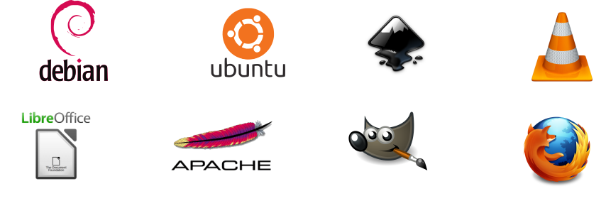

SEGURTASUN DIGITALA
Pribatasuna eta Segurtasuna
- Ez erre mesedez
- Ez atera argazkirik mesedez
- Audioa grabatu daiteke?
- GALDETU
- No somos el oraculo
INTERNES
Zer gertatzen da internetera konektatzen garenean?
Zerbitzariak
Software Librea
wiki/soft-librea
1983 Richard Stallmanek Free Software Foundation sortzen du. (GPL)
4 Askatasunak
0. Helburua edozein dela ere, programa exekutatzeko askatasuna.
1. Programa aztertu eta norberaren beharretara egokitzeko askatasuna.
2. Programa kopiatzeko eta kopiak banatzeko askatasuna.
3. Programa hobetzeko askatasuna eta hobetutako bertsioa zabaltzeko askatasuna.
MONITORIZAZIO ETA MANIPULAZIO MASIBOA
Kamarak
Mugikorrak
Txartelak, biometria...
Internet: Sare sozialak, zerbitzuak...
gaur egun datu hartzeak por defecto
METADATOS
Ze "zerbitzu" erabiltzen dituzue?
facebuk guatzxap etc-ren irudiak
Ez dira herramintaK ENPRESAK DIRA
Feisbuk, twiter, instagram, gugel
Monitorizazioa
Datu salerosketa
Manipulazioa
Zensura
Jarri adibideak
Pribatasuna gauza kolektiboa da
standarizatu segurtasuna
Alternatibak
Sistema Eragileak
Debian
asdfasd
dfgsdf
...
Nabigatzaileak
Firefox
TorBrowser
Brave
...
Arakatzaileak
Searx
StartPage
DuckDuckGo
...
Protonmail
Riseup
Disroot
...
Sare sozialak
GNUsocial
Mastodon
Diaspora
PixelFed
Uneko Mezularitza
XMPP (Protokoloa)
ChatSecure
Conversations
Riot(Matrix)
Signal
...